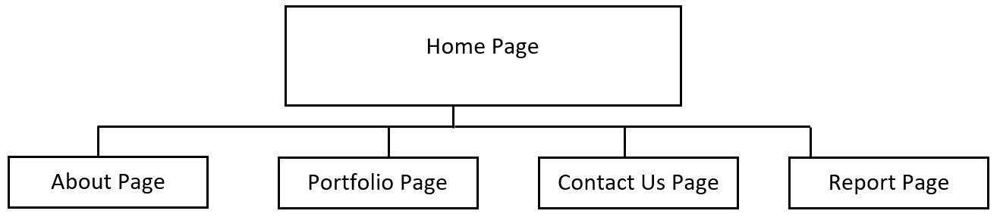
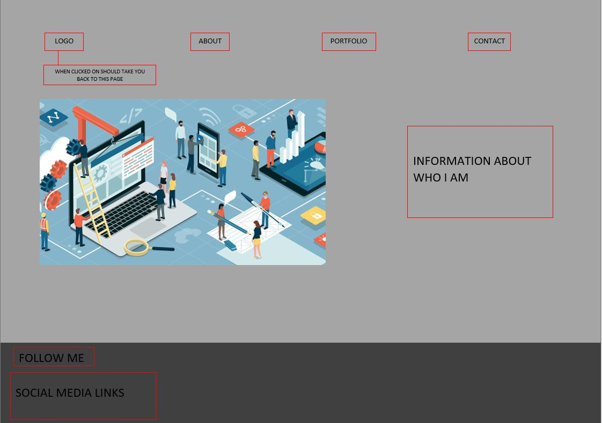
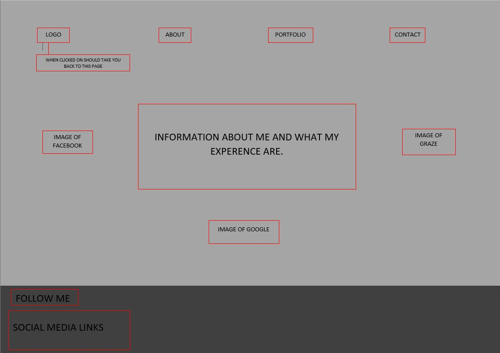
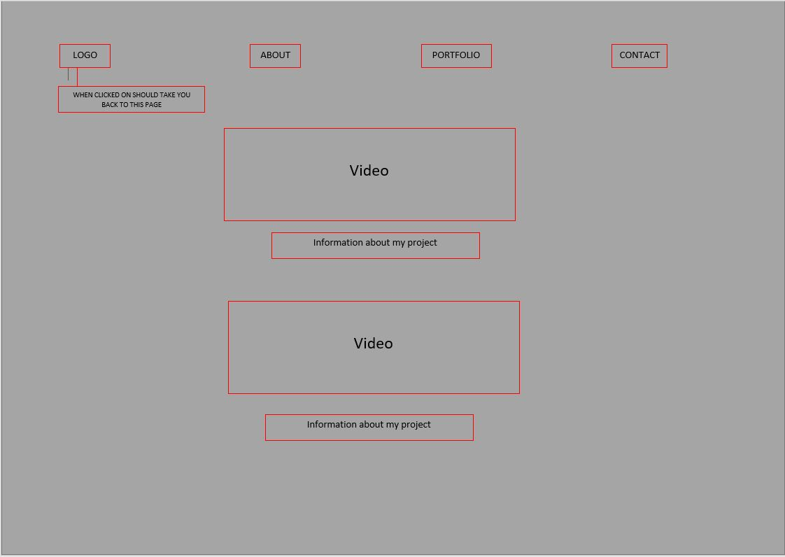
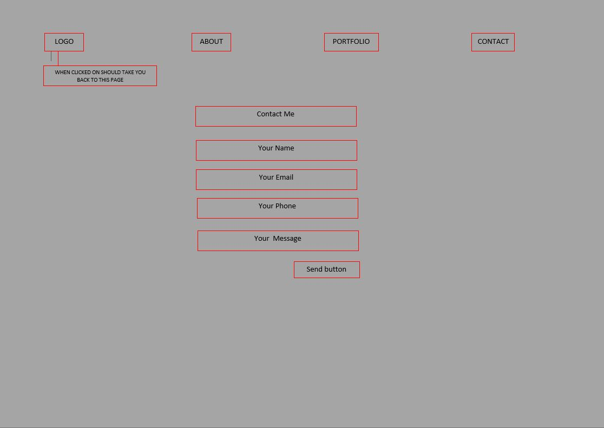
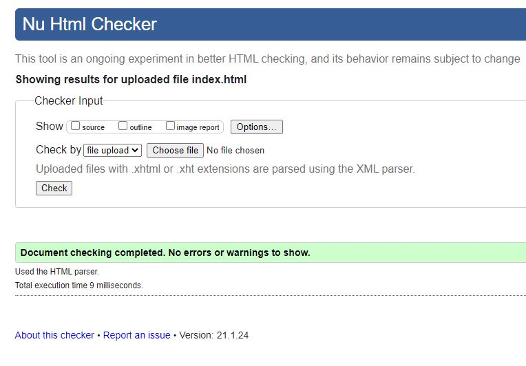
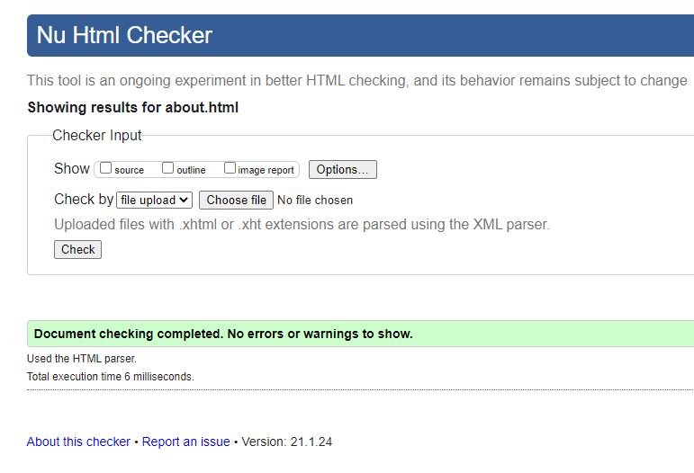
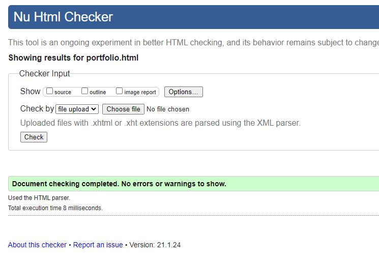
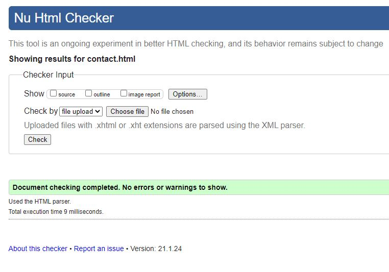
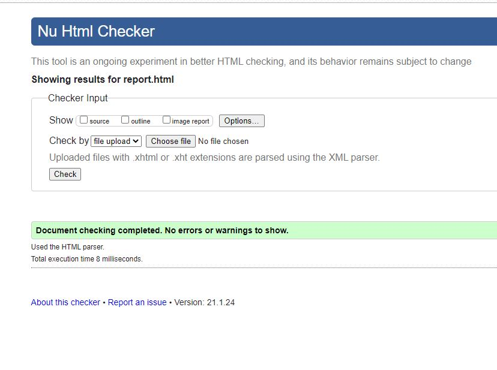

Website url: http://doc.gold.ac.uk/~sguru003/Webpage/index.html
Introduction
How did you approach the subject? What does your site say about future you?
I approached the subject very open-mindedly and was looking forward to developing my website. I was always interested in the process of making websites and having finally made my own gives me a sense of fulfillment. The website hopefully shows an ambitious person's aspiration as working in top companies such as Google and Facebook is a big feat. The journey to getting to work there will be difficult, but I am up for a ride.
Background
Who is your audience?
My target auidence were young aspiring software devlopers and people that want to start off with software development as their career
- Portfolio 1: https://aliabdaal.com/about/
- Portfolio 2: http://www.justinescalona.com/
- Portfolio 3: https://sanjoo.in/
Portfolio 1 is very information-rich and is very easy on the eyes. It has a simple design that is very welcoming.
Portfolio 2 is also very simple and clean. Its unapologetic use of colours adds to its charm.
Portfolio 3 is very unique in the sense that it is just one page and the font used along with the simple design makes the website stand out.
A resource that I used to create an online portfolio would be the blog https://skillcrush.com/blog/web-design-portfolio/. This blog shows examples of great web portfolios and what makes them great. This blog also gives a guide to what to put in a web portfolio
Planning
- Accessibility aspect 1
- Accessibility aspect 2
- Accessibility aspect 3
1)One accessibility aspect I did was to make sure my text color contrast the background color.
2)Two I made sure my text was large enough to read.
3)Made sure my website is not filled with content and is simple and neat so it is easy to understand.
How have you made the site easy to navigate?
I have made my site easier to navigate by adding a navigation bar at the top of the screen this ensure that user will be about to easily navigate through my website. Also my website is not cluttered with information. It is very simple and has little to no writing.
Implementation
One thing that I had to learn was how to create a contact form and be able to receive the message the user has sent me. I found the code on w3 schools. I modified that code from w3 school and made the code shorter. I did not use the label tag as I dint not use id but classes instead.
I worked with javascript and was going to use PHP, however, I found a simpler solution to solve my issue without using PHP which was creating the contact form. I used gsap which is a javascript library that is built for high-performance animations.
Evaluation
What worked well
One thing that worked well was getting the contact me part of the website to work. When planning the website, I thought
of creating this section in my website. To my great surprise, it was much easier than I thought.
Another thing that worked well
was the design of the website. It is very simple and easy to the eye and does not take itself too seriously, which was my aim.
Lastly,
the introduction animation to my website works really well. It gives my website a professional feel. This is despite me saying that the site does not take itself seriously.
What might be improved
Something I could have improved on could be increasing the content on my website. If I had more time, I would do things that include making more webpages.
Although my website is simple,
I could further make the design of my webpage more interesting. If I had more time, I would make my background animated and.
I would also make navigating my website more interesting for example like https://sanjoo.in/ website where Sanju's website is just one page.
Although I had an animated introduction at the start.
I could have added more javascript animation to make navigating my website more fluid.
References
[1] S.Edwin "website-animation-trick",2020 [Source code]. https://github.com/developedbyed/website-animation-trick
[2] w3school "How To Create Contact Form" [Source code]. https://www.w3schools.com/howto/howto_css_contact_form.asp
Appendix
Site Map
Wireframes
Home Page
About Page
Portfolio Page
Contact Page
Validator reports
index.html
about.html
portfolio.html
contact.html
report.html
